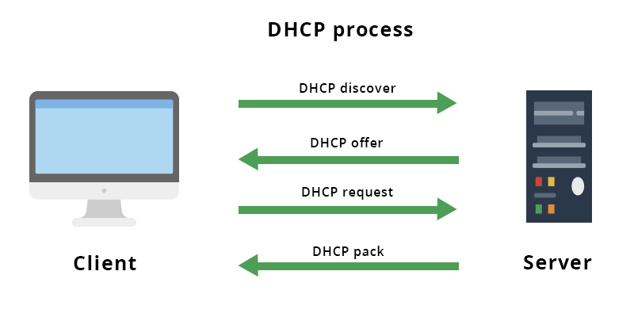

Cuando ‘enchufamos’ el cable Ethernet a un ordenador, o conectamos a la red WiFi de nuestro router, Internet empieza a funcionar. Sin embargo, la configuración de red –o su funcionamiento-, incluso en el ámbito doméstico, es algo realmente complejo. El protocolo DHCP es uno de los que permite que todo esto funcione de forma rápida, sencilla y ‘silenciosa’ para los usuarios, pero tiene algunas limitaciones.
DHCP viene de ‘Dynamic Host Configuration Protocol’, es decir, protocolo de configuración dinámica de host. Se trata de un protocolo de red tipo cliente / servidor que se encarga de asignar direcciones IP de forma automática, pero también otros parámetros relativos a la configuración de red, a todos y cada uno de los dispositivos que estén conectados. El servidor DHCP cuenta con una lista de direcciones IP para poder ir asignándoselas a los clientes a medida que van quedando libres, y considerando siempre: cuánto tiempo la tienen y qué cliente la tiene.
El protocolo DHCP está activado por defecto en todos los routers que distribuyen los operadores de telecomunicaciones a sus clientes, y en los que se pueden comprar de forma independiente. Esto permite que se asignen direcciones IP de forma dinámica a todos los dispositivos que conectan en red tanto por cable Ethernet como por WiFi, sin cables. Y así, la gestión de dispositivos es mucho más cómoda, rápida y fluida, y el usuario no tiene que configurar absolutamente nada.
